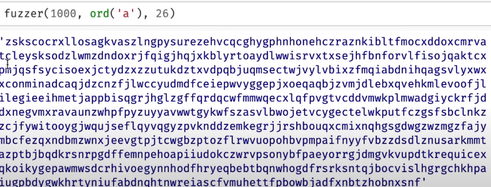
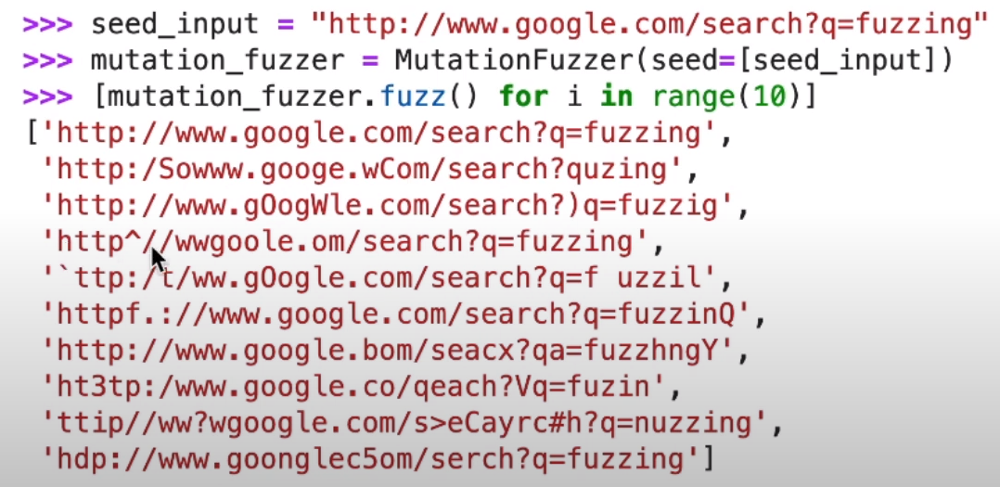

This was first tried in a Fall 1988 class project in the graduate OS class, taught by Prof. Barton Miller, at the University of Wisconsin.
Random strings of random lengths
Search for interesting behaviour
Crashes
Hangs
But probably not logical errors
Invoke on Microsoft Word — and it crashed frequently.
def fuzzer(max\_length : int = 100, char\_start : int = 32, char\_range: int = 32) -> str;
Example Randomly Fuzzed Output
Pros of random string generation
Universally applicable for any piece of software that accepts strings
No user inputs required
Cons of random string generation
While this may find lots of bugs initially, soon we stop uncovering new bugs
A general con of fuzzing
Fuzzing is only interested crashes and hangs.
But it is still interesting from the point-of-view of security because once you get a crash, you can inspect the code around it; and perhaps you may identify a buffer overflow or an integer overflow
Works only for inputs that can be expressed as strings served as inputs at the top-level. Need to write “fuzzing harnesses”.
the design of the harness may limit the effectiveness of the fuzzing technique
the harness may inadvertently cause certain parts of the input space to remain uncovered, e.g., if the program expects a linked list, what happens if the input list contains a cycle. The harness may not allow the creation of such a harness.
Mutation-based Fuzzing
Ask the user to provide a set (possibly singleton) of valid inputs.
The fuzzer will search for crashes and hangs in the vicinity of these valid inputs
These valid inputs will be called a “population”
Randomly pick an input from the population and mutate it. The mutation could be
delete a character
add a character at a randomly chosen position
change an existing character
Example for Mutation Fuzzing
These mutation types require no user guidance
Other user-assisted mutation types are: introduce a word from user-supplied dictionary
e.g., HTML tags, C keywords, etc.
A mutation fuzzer vs. a random input fuzzer
the percentage of valid inputs that a mutation fuzzer generates can be much higher
Coverage-guided Mutation Fuzzing
Have a coverage metric
code coverage
edge coverage
Have a method for measuring the coverage metric
compiler-based instrumentation
binary translation
sampling
Estimate the coverage of the mutated input
If the coverage due to the mutated input has increased, add the mutated input to the population
the idea is to move towards increasing the coverage of the tests
for instrumentation-based coverage measurement, a single run is often enough to measure the coverage
American Fuzzy Lop is a fuzzer based on this coverage-guided mutation approach
By far the most frequently used fuzzer these days for practical programs
Allows you to supply a dictionary
the better your dictionary, the better your fuzzer
Surprisingly effective at identifying bugs
Run the fuzzer for hours, days
This kind of thing is exactly wht penetration testers do today.
Show a fuzzing effectiveness graph
Number of inputs on the X axis (10,000 - 100,000)
Lines covered (40-200)
Edges covered (400-2000)
Discuss fuzzing for compilers
Fuzzing with Generators
Regular Languages (a^n) -> Context Free Languages (anbn) -> Context Sensitive Languages -> Universal Languages
Consider a CFG as follows
E -> int | (E + E) | (E * E)
Do CFG.fuzz() to generate a random expression from this CFG
Attach a generator to the “int” to restrict the values of the leaf nodes to say lie between 10 and 20
Produces syntactically-valid inputs
Many possibilities for generator-based fuzzing. Generators are turing complete so you can compute anything with them.
CFGs are a sweet spot with small doses of turing complete functions (e.g., at leaf nodes) – so that we retain the declarative nature of CFGs without having long generator functions that may become super-specific to one particular domain (Andreas Zeller).
Greybox Fuzzing with Grammars
Swapping Input Elements
Region swapping (a region is a subtree)
Symbolic Analysis
Find an input that crashes this program. Construct a first-order logic formula, and use a “SAT/SMT Solver” to solve for its satisfiability.
int f(int y) {
z = y * 2;
assert(z != 12);
...
}
Tackle branches using the Weakest Precondition Calculus.
int f(int y) {
z = y * 2;
if (z <= 12) {
x = w + y;
assert(x > 4);
}
...
}
int f(int y) {
z = y;
if (a) {
z = f1(z);
} else {
z = f2(z);
}
if (b) {
z = f3(z);
} else {
z = f4(z);
}
if (c) {
z = f5(z);
} else {
z = f6(z);
}
if (d) {
z = f7(z);
} else {
z = f8(z);
}
assert(z != 0);
}
Tackle loops!
int f(int y, int w) {
z = y;
a = w;
while (a) {
z = f1(z); //z = z + 1;
a = f2(a); //a = a - 1;
}
assert(z + a != 0);
}
Does there exist an input y, such that the assertion fails? This is undecidable in Turing’s model of computation with an infinite tape.